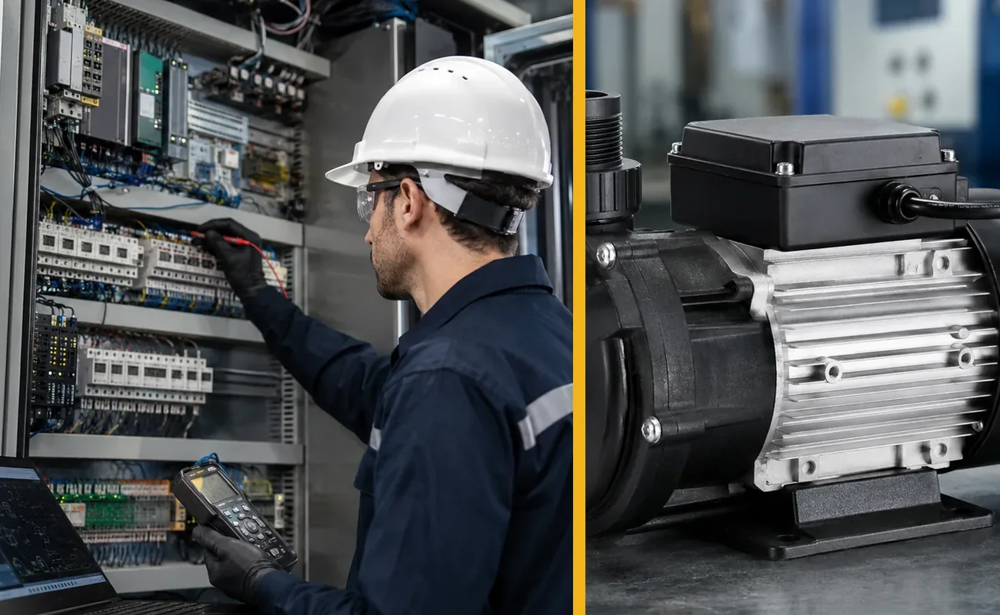

Our Divisions
Eight focused capability areas under one industrial-support platform. Each requirement is scoped separately so customers can identify the most appropriate route.
Advanced Manufacturing & Components
3D printing, laser cutting, laser welding, laser marking, fabrication, bending, machining and custom industrial components.
VIEW DETAILS ↓02Engineering & Design
Mechanical design and manufacturing-ready engineering information from concept, sketch, photograph, sample or existing data.
VIEW DETAILS ↓03Industrial Products & Spares
Supply and sourcing of selected laser-machine consumables, chiller spares, automation hardware and machine components.
VIEW DETAILS ↓04Industrial Machine Maintenance
Breakdown and preventive-maintenance support for industrial machines and auxiliaries.
VIEW DETAILS ↓05Automation Solutions
Practical support around machine controls, PLC/HMI hardware, Industrial IoT and selected retrofit requirements.
VIEW DETAILS ↓06Quality, Certification & Business Compliance
Management-system implementation, documentation, readiness and certification/registration coordination.
VIEW DETAILS ↓07Tender & GeM Support
Tender discovery and bid-support services without guaranteeing eligibility, acceptance or award.
VIEW DETAILS ↓08Inspection & QA Support
Pre-dispatch, dimensional, visual and vendor-quality support within an agreed non-accredited scope.
VIEW DETAILS ↓Advanced Manufacturing & Components
3D printing, laser cutting, laser welding, laser marking, fabrication, bending, machining and custom industrial components.
- 3D printing & rapid prototyping
- Laser cutting of sheet and plate
- Laser welding and marking
- Sheet-metal and structural fabrication
- CNC/VMC and conventional machining
- Custom / obsolete machine spares
- Multi-process manufacturing coordination

Engineering & Design
Mechanical design and manufacturing-ready engineering information from concept, sketch, photograph, sample or existing data.
- 3D CAD modelling
- 2D manufacturing drawings
- Sheet-metal and assembly design
- Reverse engineering
- DFM / design modification
- BOM and technical documentation
- Jigs, fixtures and tooling concepts

Industrial Products & Spares
Supply and sourcing of selected laser-machine consumables, chiller spares, automation hardware and machine components.
- Laser cutting nozzles and optics
- Laser welding consumables
- Laser marking lenses and components
- Laser chiller pumps / filters / sensors
- Industrial IoT and PLC/HMI modules
- CNC/VMC maintenance spares
- Custom / obsolete components
- Sheet-metal bending punches, dies & tooling
- PLC / HMI modules and control-housing components

Industrial Machine Maintenance
Breakdown and preventive-maintenance support for industrial machines and auxiliaries.
- CNC / VMC troubleshooting
- Laser machine support
- Industrial chiller and pump support
- Electrical / control-system troubleshooting
- Hydraulic / pneumatic issue support
- Preventive maintenance
- Installation / relocation discussions

Automation Solutions
Practical support around machine controls, PLC/HMI hardware, Industrial IoT and selected retrofit requirements.
- PLC / HMI hardware support
- I/O and interface modules
- Industrial IoT gateways and monitoring
- Sensors and field devices
- Control component sourcing
- Troubleshooting / retrofit planning
- Basic panel / wiring coordination

Quality, Certification & Business Compliance
Management-system implementation, documentation, readiness and certification/registration coordination.
- ISO 9001 / 14001 / 45001 / 50001 support
- Integrated management systems
- SOPs, forms and QMS documentation
- Internal audit / MRM / CAPA support
- MSME ZED and quality improvement
- GS1 / IEC / NSIC / business-registration guidance
- Certification-body coordination

Tender & GeM Support
Tender discovery and bid-support services without guaranteeing eligibility, acceptance or award.
- Tender / GeM bid search
- Basic eligibility review
- Document collection and structuring
- Technical/commercial submission support
- Clarification and submission assistance
- Bid-tracking support

Inspection & QA Support
Pre-dispatch, dimensional, visual and vendor-quality support within an agreed non-accredited scope.
- Pre-dispatch inspection
- Dimensional and visual checks
- Drawing / BOM verification
- Material-document review
- Vendor quality follow-up
- NCR / CAPA support
- Inspection reports and photographic records